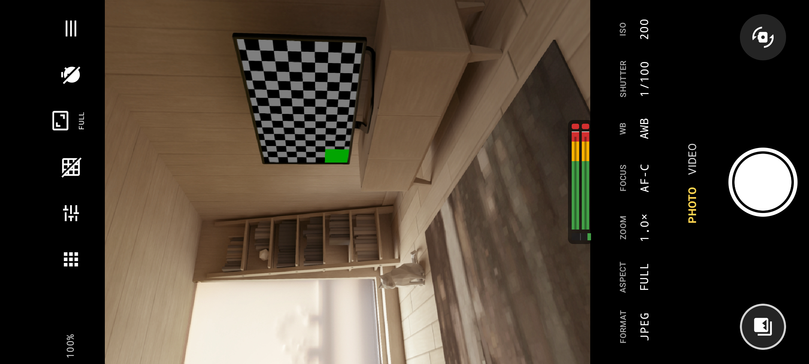
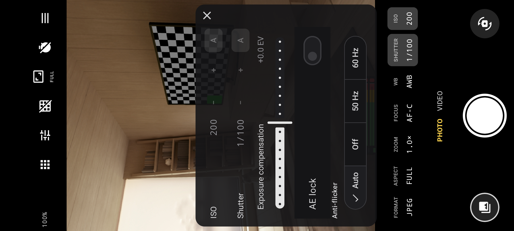
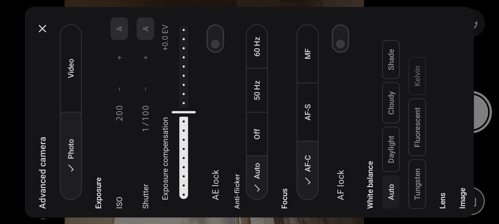

Set ISO and shutter
Adjust sensitivity, shutter speed or a 180-degree shutter angle. Use AE lock, EV compensation and 50/60 Hz anti-flicker.
CAMERA MODE / ANDROID
Use an Android phone or tablet as a camera, then bring the same scopes, false colour, peaking and LUT tools to its own image.
PHOTO + VIDEO · CAMERA2 · DEVICE-AWARE FEATURES

A straightforward camera first
The regular camera view is designed for fast capture. Open advanced camera controls for a detailed manual setup where the selected lens exposes the capabilities.
Adjust sensitivity, shutter speed or a 180-degree shutter angle. Use AE lock, EV compensation and 50/60 Hz anti-flicker.
Use continuous or single autofocus, a focus wheel, focus lock and eased A-to-B focus pulls with up to four focus pins.
Choose auto white balance and presets, or use manual Kelvin and tint where supported.
Switch lenses, use supported zoom ranges, and control optical or electronic stabilisation when exposed by the device.
Use Standard, Flat or the documented camera-log profile; the app reports when the device cannot turn off its own image processing.
Use supported volume keys, keyboard commands, remote shutters and configurable control mappings.


Set up the shot
Tap a value for a compact see-through control, or open the full settings sheet for exposure, focus, white balance, lens and image options.
The app displays capabilities reported by the active Camera2 lens. A phone can limit manual sensor controls or RAW support, particularly on secondary lenses.
Read about device supportPhotography / DNG
Advanced still capture gives supported devices a choice of file formats and capture modes rather than assuming every lens can do everything.
Video / Camera Log
Choose supported frame rates and encode formats, record through the monitor pipeline, and keep the exposure tools visible while rolling.
One app, two camera paths
Read about HDMI monitoring, supported capture devices, power and streaming—and check which advanced camera options require Pro.